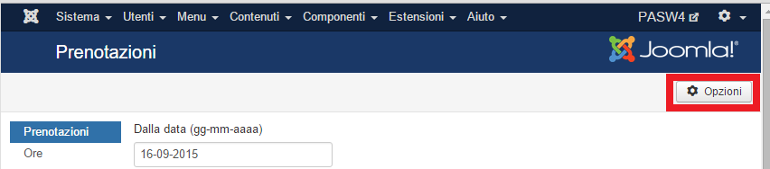
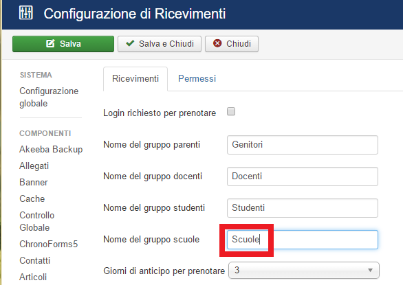
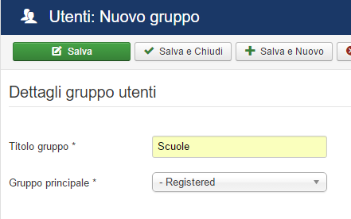
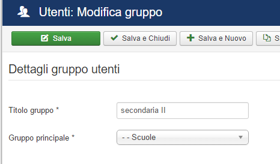

Scuole multiple in Ricevimenti per Joomla
Ricevimenti per Joomla implementa la possibilità di gestire più scuole, o meglio di gestire gli insegnanti di diverse scuole.
Il primo passo della configurazione consiste nell'entrare nelle opzioni dell'estensione:

Si vedrà che la configurazione predefinita non imposta il nome del gruppo scuole: questa configurazione va bene nel caso di scuola unica, mentre nel caso di scuole multiple andrà impostato un gruppo, ammettiamo che sia "Scuole".

Fatto questo si potrà salvare e chiudere e passare alla pagina dei gruppi:
Qui creeremo un gruppo col nome scelto in precedenza:

Il passo successivo consiste nel creare un gruppo per ogni scuola, specificando il gruppo appena creato come gruppo principale. Se il gruppo utenti della scuola esiste già entrate in modifica e mettete "Scuole" (o altro nome da voi scelto) come gruppo principale:

Questo è tutto! Naturalmente tutti i docenti dovranno essere inseriti nel gruppo della scuola (o nei gruppi delle scuole) in cui insegnano.